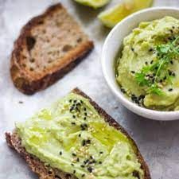

Avocado Toast Recipe

Description
This is the easiest—and the last—avocado toast recipe you will ever need to know.
Memorize the recipe, then use it as a jumping off point for your favorite avocado toast riffs
Ingredients
- ½ small avocado
- ½ teaspoon fresh lemon juice
- ⅛ teaspoon Kosher salt
- ⅛ teaspoon freshly ground black pepper
- 1 (1 oz.) slice whole grain bread, toasted
- Toppings: Maldon sea salt flakes, red pepper flakes
Steps
- In a small bowl, combine avocado, lemon juice, salt, and pepper. Gently mash with the back of a fork.
- Top toasted bread with mashed avocado mixture. Drizzle with olive oil and sprinkle over desired toppings..